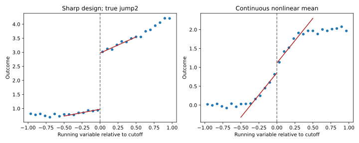

IIT Hyderabad · NPTEL · Independent study edition
Regression discontinuity and local causal identification
18.1 A threshold is a design feature, not a causal conclusion
A scholarship may become available at a score cutoff, an eligibility rule may begin at a specified age, or a pricing algorithm may change its action when a continuous index crosses a boundary. These settings create an opportunity to compare observations close to the threshold. A visible break in a fitted curve is not enough to establish what caused that break.
A running variable is the score or measurement that determines assignment. Denote it by $r\in\mathbb R$, and let $c$ be a known cutoff. In a sharp regression-discontinuity design, the treatment indicator is $D=\mathbf1\{r\ge c\}$. The treatment is the intervention that changes at the boundary; it is not the running variable itself. A causal question must identify the treatment, the outcome, and the population near the boundary.
A segmented regression can describe different mean curves on two sides of any chosen point. Regression discontinuity as a causal design additionally requires that the assignment rule and counterfactual comparison be credible. A data analyst cannot create this design merely by searching for the cutoff with the largest fitted jump. The treatment rule must exist, and other determinants of the outcome must satisfy the identifying conditions.
The source discusses a minimum-age alcohol-access example and historical ride-pricing thresholds. A primary published study by Carpenter and Dobkin analyzes the age threshold in a specific historical population. Its empirical result is not a claim that every single-day birthday spike measures the same permanent treatment effect. The notes do not infer current driving-license rules or present a historical pricing multiplier as a current platform policy.
Source: Regression Discontinuity Design, 03:01. Historical study: Carpenter and Dobkin, The Effect of Alcohol Consumption on Mortality (2009).
18.2 The local effect identified by continuity
Let $Y(0)$ and $Y(1)$ be a unit's potential outcomes without and with treatment. Consistency means that the observed outcome is $Y=(1-D)Y(0)+DY(1)$. Assume that treatment status follows the sharp cutoff rule and that there are observations arbitrarily close to $c$ on both sides. Define $m_d(r)=E[Y(d)\mid r]$ for $d=0,1$.
Proposition 18.1 (proved here). If both conditional potential-outcome means have continuous limits at $c$, then the right-minus-left limit of the observed conditional mean equals the local treatment effect $\tau(c)=m_1(c)-m_0(c)$.
For $r<c$, sharp assignment gives $D=0$, so $E(Y\mid r)=m_0(r)$. For $r\ge c$, it gives $D=1$, so $E(Y\mid r)=m_1(r)$. Continuity extends the untreated mean from the left to $m_0(c)$ and the treated mean from the right to $m_1(c)$. Subtracting these limits gives
$$\lim_{r\downarrow c}E(Y\mid r)-\lim_{r\uparrow c}E(Y\mid r)=m_1(c)-m_0(c)=\tau(c).\tag{18.1}$$
Support on both sides makes the observed limits meaningful. Consistency connects observed outcomes with their potential-outcome means. Neither step requires a globally linear response curve. ∎
The effect is local to the cutoff. Extending it to people far from that boundary requires additional assumptions or evidence. The proof also shows its failure mode. If the untreated potential-outcome mean itself jumps at the same cutoff, the observed discontinuity contains that jump as well as the treatment effect. A simultaneous policy change or systematic sorting of different units can therefore invalidate the intended causal interpretation.
Whether potential-outcome means would be smooth at the cutoff is not directly testable from the observed outcomes: each side reveals only one treatment state. Substantive knowledge of assignment and measurement is indispensable. Examining score density, predetermined covariate balance, placebo cutoffs and alternative specifications can detect problems, but passing these checks does not prove the unobserved counterfactual condition. Some scores are discrete or heavily rounded, limiting how closely observations approach the boundary and changing the appropriate interpretation of continuity-based approximations.
If crossing the cutoff changes treatment probability rather than treatment status deterministically, the sharp proof no longer applies. A treatment-probability discontinuity can support another design under additional assumptions, but one should not interpret the observed outcome jump as the sharp treatment effect automatically. The distinction is part of identifying the intervention before choosing a regression formula.
The lecture introduces the cutoff jump at 07:11. A detailed primary methodological treatment is Cattaneo, Idrobo and Titiunik, A Practical Introduction to Regression Discontinuity Designs: Foundations, sections 2 and 4.
18.3 Estimating the boundary with separate slopes
Center the score at the cutoff by writing $x_i=r_i-c$. A piecewise-linear mean specification is
$$E(Y_i\mid r_i)\approx\alpha+\tau D_i+\gamma x_i+\delta D_i x_i.\tag{18.2}$$
On the left, the fitted intercept at the boundary is $\alpha$ and slope is $\gamma$. On the right, they are $\alpha+\tau$ and $\gamma+\delta$. Thus $\tau$ is the fitted intercept difference at the cutoff. The interaction permits different slopes. Omitting it imposes a common-slope restriction; that is a modeling assumption rather than a consequence of the design.
Centering is essential for interpreting the treatment coefficient. If an uncentered score is used with a treatment-score interaction, the coefficient of $D$ is the difference at score zero, which may lie far from the cutoff. At the actual cutoff the fitted difference combines that coefficient with the interaction. A correct transformation of the design leaves the fitted curves unchanged but changes which coefficient directly reports the desired boundary contrast.
A local fit uses observations within a bandwidth $h>0$ of the cutoff. A triangular kernel assigns weight $w_i=1-|x_i|/h$ for $|x_i|<h$ and zero otherwise. Weighted least squares on the design columns $(1,D_i,x_i,D_i x_i)$ estimates both boundary intercepts. The kernel weights describe locality; they are not a claim that the observation error variance is the reciprocal of that kernel. A covariance calculation must respect the estimator's actual purpose.
The bandwidth trades approximation error against sampling uncertainty. Under smooth conditional means, a Taylor expansion near the boundary contains a constant, a linear term and a remainder of order $x^2$. Local-linear weights reproduce constants and linear terms, leaving a leading bias of order $h^2$ under appropriate nondegenerate design conditions. With score density positive near the cutoff, there are order $nh$ local observations; weights of order $1/(nh)$ give a variance of order $1/(nh)$ under bounded independent error variances.
This rate argument suggests an approximate mean squared error $C_bh^4+C_v/(nh)$ with positive constants $C_b,C_v$. Differentiating gives $h^5=C_v/(4C_bn)$, the familiar $n^{-1/5}$ rate. The argument identifies the mechanism; it does not supply a practical optimal bandwidth or a complete asymptotic theorem for arbitrary designs. Vanishing curvature, discrete scores, dependence and other boundary conditions can change the details.
A conventional heteroscedasticity-consistent standard error addresses sampling variability of the fitted local regression. It does not by itself correct the local-polynomial bias. At bandwidths chosen for point-estimation accuracy, that bias can be material for confidence intervals. Specialized bias-corrected methods also account for uncertainty introduced by estimating the bias. The laboratory reports conventional HC3 standard errors only as an implementation demonstration, without claiming formal robust bias-corrected regression-discontinuity inference.
Source model and different curve shapes: 09:13 and 11:12. Local-polynomial inference distinctions: the methodological reference above, section 4.3.
18.4 An executable design and a deliberate identification failure
The Python laboratory generates 1,200 independent synthetic observations with a known sharp assignment rule at zero. The untreated conditional mean is $1+0.6r+0.4r^2$, the treatment effect is $2+0.3r$, and the disturbance has independent Gaussian standard deviation $0.35$. Both potential-outcome means are continuous, and the true effect at the cutoff is two outcome units. These data are an original teaching construction, not a reconstruction of the source's mortality or pricing records.
The triangular local-linear fit with bandwidth $0.5$ uses 279 observations on the left and 305 on the right. It estimates a jump of $1.998572802$, with conventional HC3 standard error $0.067265349$. Bandwidths $0.25$, $0.75$ and $1$ give estimates $2.022091069$, $2.014904482$ and $2.019623690$. Agreement with the known target in this run verifies the computational example; it is not a universal coverage result. Each fit is independently checked against explicit square-root-weighted least squares.

The second construction has conditional mean $1+\tanh(4r)$, which is continuous at zero. A full-range segmented linear approximation nevertheless reports a jump of $0.714900377$ in this sample; narrowing the bandwidth to $0.25$ gives $0.084937885$. The difference arises from approximation and noise, not a genuine discontinuity in that data-generating mean. This implements the source's warning that curved patterns can be mistaken for a jump.
The third construction adds a separate $0.8$ discontinuity to the untreated conditional mean at the same boundary while keeping the treatment effect function unchanged. The fitted jump increases by exactly $0.8$, as asserted by the program. A researcher seeing only observed outcomes could wrongly assign the additional change to treatment. The failure is in identification; choosing a more powerful optimizer cannot repair it.
No R code is demonstrated in the complete caption track assigned to this final lecture. Its graphs and empirical stories are used to motivate the design, while the laboratory supplies transparent synthetic inputs. Full source microdata and an independent numerical reproduction of the historical empirical studies are not claimed. Reproducing a graph's appearance would not substitute for recovering its data, assignment rule and uncertainty calculation.
18.5 Exercises with worked solutions
Conceptual: a piecewise fit. A researcher searches many cutoffs and finds one with a large fitted response jump. What is still missing for a causal regression-discontinuity interpretation?
Solution
There must be an actual treatment assignment rule at a known cutoff, a defined intervention, consistency, adequate score support, and credible continuity of the counterfactual outcome means. Searching on the outcome does not create these conditions. The search also changes the statistical inference problem. A fitted discontinuity can describe the sample without identifying a treatment effect.
Conceptual: the target population. Does the effect in eq. (18.1) describe everyone who receives treatment?
Solution
No. It is the effect at the cutoff, defined through conditional potential-outcome means there. People far above the cutoff can have different treatment effects. Extrapolation needs additional structure or evidence. This local estimand can still be relevant for a policy that changes eligibility near the existing boundary.
Derivation: centering and the jump. An uncentered model is $a+bD+gr+uDr$. Express the boundary jump at $r=c$ and the equivalent centered parameterization.
Solution
The right-minus-left fitted difference at $c$ is $b+uc$. Substitute $r=x+c$ to obtain $(a+gc)+(b+uc)D+gx+uDx$. Thus the centered intercept is $a+gc$, the centered treatment coefficient is $b+uc$, and the two slope terms retain $g,u$. Fitted values are unchanged, while the centered treatment coefficient now directly reports the boundary contrast.
Derivation: a violated continuity condition. Suppose the untreated mean has a boundary jump $\zeta$, while the treatment effect is continuous with value $\tau(c)$. What does the observed jump identify?
Solution
On the right, the observed mean is the right-limit untreated mean plus $\tau(c)$. On the left it is the left-limit untreated mean. Subtraction gives $\zeta+\tau(c)$. Without information separating the two terms, the observed jump does not identify the treatment effect alone. The laboratory sets $\zeta=0.8$ and verifies the induced estimator difference.
Computational: two representations of a local fit. Verify that the triangular weighted fit agrees with an ordinary least-squares fit to transformed observations.
Solution
For every retained row, multiply its outcome and all four design entries by $\sqrt{w_i}$. Ordinary least squares then minimizes the same sum $\sum_iw_i(y_i-\mathbf x_i^T\boldsymbol\theta)^2$. The laboratory compares both coefficient vectors at every bandwidth and asserts agreement to floating-point tolerance. This checks the computation, not the causal assumptions.
Computational design: a bandwidth audit. Explain what to report when estimates change substantially across plausible local bandwidths, and why conventional robust standard errors are not a complete solution.
Solution
Report bandwidths, retained sample sizes on both sides, polynomial order, kernel, estimates, uncertainty method and relevant diagnostics. Investigate curvature, sparse support, sorting and covariate discontinuities rather than selecting the most favorable result. Conventional heteroscedasticity-robust standard errors address sampling variation around the local approximation; they do not remove approximation bias or establish counterfactual continuity. Use an inference method designed for the RD estimator when making a formal causal claim.
The course's methods now serve distinct purposes. Covariance and latent representations describe variation; clusters summarize similarity; regression specifies conditional means; diagnostics examine failure modes; validation evaluates a fitted prediction procedure. A causal design adds assumptions that identify what an intervention changes. The same software output cannot answer all of these questions without those distinctions.
Python laboratory
Run labs/ch18.py from the course folder.
Data and figure paths, when used, are resolved by the program. Dependencies are listed in
requirements.txt.
Complete runnable Python source
"""Synthetic sharp regression-discontinuity mechanisms and assumptions."""
from pathlib import Path
import matplotlib
import numpy as np
import statsmodels.api as sm
from scipy.stats import binned_statistic
import matplotlib.pyplot as plt
matplotlib.use("Agg")
def local_linear(running, outcome, cutoff=0., bandwidth=0.5):
if bandwidth <= 0:
raise ValueError("Bandwidth must be positive")
centered = np.asarray(running) - cutoff
keep = abs(centered) < bandwidth
x = centered[keep]
treatment = (x >= 0).astype(float)
design = np.column_stack([np.ones(len(x)), treatment, x, treatment*x])
weights = 1 - abs(x) / bandwidth
if np.linalg.matrix_rank(design) < 4:
raise ValueError("Both cutoff sides need enough distinct observations")
fit = sm.WLS(np.asarray(outcome)[keep], design, weights=weights).fit()
direct = np.linalg.lstsq(np.sqrt(weights)[:, None]*design,
np.sqrt(weights)*np.asarray(outcome)[keep],
rcond=None)[0]
assert np.allclose(fit.params, direct, atol=1e-10)
robust = fit.get_robustcov_results(cov_type="HC3")
return fit, robust.bse[1], int((x < 0).sum()), int((x >= 0).sum())
def main():
rng = np.random.default_rng(1801)
running = rng.uniform(-1, 1, 1200)
treatment = (running >= 0).astype(float)
untreated = 1 + 0.6*running + 0.4*running**2
effect = 2 + 0.3*running
disturbance = rng.normal(scale=0.35, size=len(running))
outcome = untreated + treatment*effect + disturbance
print("Original synthetic sharp design; seed=1801, n=1200")
print("True treatment effect at cutoff=2.000000")
fits = []
for bandwidth in [0.25, 0.5, 0.75, 1.0]:
fit, standard_error, left, right = local_linear(
running, outcome, bandwidth=bandwidth)
fits.append((bandwidth, fit))
print(f"h={bandwidth:.2f}, nLeft={left}, nRight={right}, "
f"jump={fit.params[1]:.9f}, "
f"conventional HC3SE={standard_error:.9f}")
print("HC3 values are conventional demo standard errors, "
"not RD bias-corrected inference.")
nuisance_jump = 0.8
invalid = outcome + nuisance_jump*treatment
valid_fit = local_linear(running, outcome, bandwidth=0.5)[0]
invalid_fit = local_linear(running, invalid, bandwidth=0.5)[0]
jump_change = invalid_fit.params[1] - valid_fit.params[1]
assert np.isclose(jump_change, nuisance_jump)
print(f"Untreated-mean violation adds={nuisance_jump:.6f} "
"to observed jump, "
"without changing treatment effect.")
smooth = 1 + np.tanh(4*running) + disturbance
smooth_fit = local_linear(running, smooth, bandwidth=1.)[0]
narrow = local_linear(running, smooth, bandwidth=0.25)[0]
print("Continuous nonlinear mean, true jump=0: "
f"h1fit={smooth_fit.params[1]:.9f}, "
f"h0.25fit={narrow.params[1]:.9f}")
figure, axes = plt.subplots(1, 2, figsize=(10, 4))
for axis, response, title in [
(axes[0],
outcome, "Sharp design; true jump2"),
(axes[1],
smooth, "Continuous nonlinear mean")]:
means, edges, _ = binned_statistic(running, response, bins=30)
midpoint = (edges[:-1] + edges[1:]) / 2
axis.scatter(midpoint, means, s=18, label="Binned observations")
fitted = local_linear(running, response, bandwidth=0.5)[0]
for left, right in [(-0.5, 0), (0, 0.5)]:
grid = np.linspace(left, right, 100)
indicator = np.full(len(grid), float(left >= 0))
design = np.column_stack([np.ones(len(grid)), indicator,
grid, indicator*grid])
axis.plot(grid, fitted.predict(design), color="firebrick")
axis.axvline(0, color="gray", linestyle="--")
axis.set(
xlabel="Running variable relative to cutoff",
ylabel="Outcome")
axis.set_title(title)
figure.tight_layout()
figure.savefig(Path(__file__).with_name("ch18-cutoff.svg"))
plt.close(figure)
print("Local WLS/direct-whitening and nuisance-jump assertions: passed")
if __name__ == "__main__":
main()
Recorded execution output
Original synthetic sharp design; seed=1801, n=1200
True treatment effect at cutoff=2.000000
h=0.25, nLeft=144, nRight=165, jump=2.022091069, conventional HC3SE=0.092379442
h=0.50, nLeft=279, nRight=305, jump=1.998572802, conventional HC3SE=0.067265349
h=0.75, nLeft=452, nRight=437, jump=2.014904482, conventional HC3SE=0.054722497
h=1.00, nLeft=612, nRight=588, jump=2.019623690, conventional HC3SE=0.047499259
HC3 values are conventional demo standard errors, not RD bias-corrected inference.
Untreated-mean violation adds=0.800000 to observed jump, without changing treatment effect.
Continuous nonlinear mean, true jump=0: h1fit=0.714900377, h0.25fit=0.084937885
Local WLS/direct-whitening and nuisance-jump assertions: passed